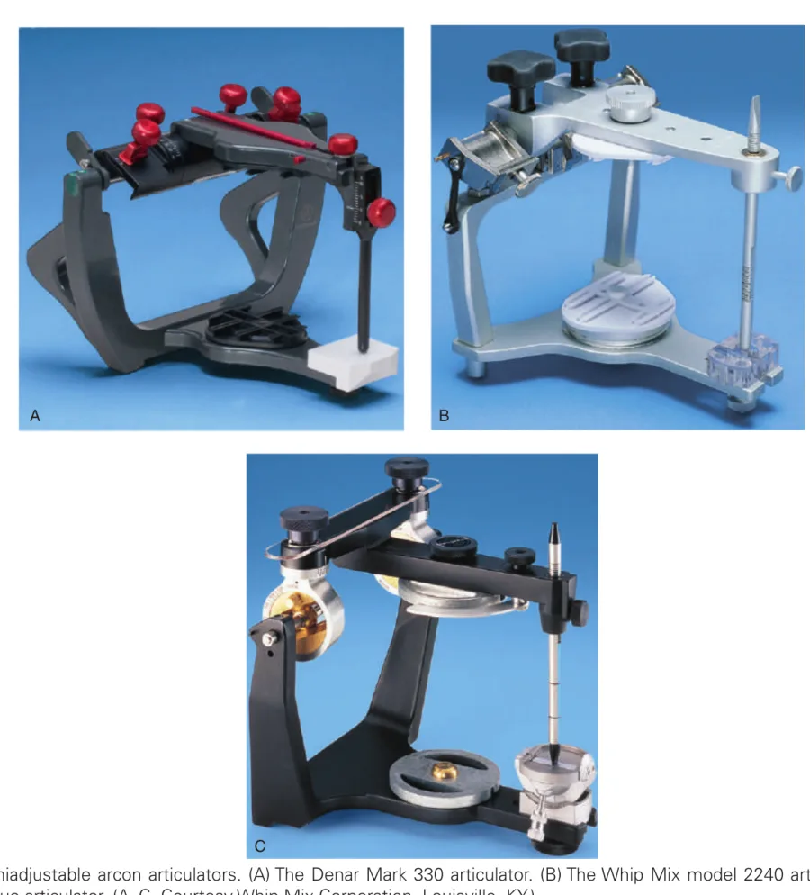

نسخه استخراجشده؛ ترجمه یا تأیید علمی انجام نشده است. وضعیت: captured
کست در دست، اطلاعات میدهد؛ کست روی آرتیکولاتور، عملکرد را نشان میدهد. به یاد بسپار: «کستهای سنتیِ در دست میتوانند اطلاعاتی دربارهی همترازی هر قوس بدهند ولی امکان تحلیل روابط عملکردی را نمیدهند.»
آرتیکولاتور یک وسیلهی مکانیکی است که حرکت مندیبل را شبیهسازی میکند و بر پایهی میزان نزدیکیاش به بازتولید حرکات مرزی طبقهبندی میشود. و چرا این ممکن است؟ «چون این حرکات با استخوانها و رباطهای مفاصل کنترل میشوند، نسبتاً ثابت و بازتولیدپذیرند.»
سود واقعیاش وقت است: اگر آرتیکولاتور حرکات مرزی بیمار را از نزدیک بازتولید کند، «زمان روی صندلی بهطور معناداری کم میشود» چون تکنسین میتواند پروتز را از همان اول در هماهنگی عملکردی طراحی کند، و زمان کمتری برای تنظیم هنگام تحویل لازم است.
و حالا مهمترین بخش این درس — چرا آرتیکولاتور کوچک غیرتنظیمپذیر خطا میسازد. مکانیزمش دقیقاً این است: «فاصلهی میان لولا و دندانی که قرار است ترمیم شود، در بیشتر آرتیکولاتورهای غیرتنظیمپذیر بهطور معناداری کمتر از بیمار است.»
و پیامدش زنجیرهوار است: شعاع کوچکتر → قوس بسته شدن تندتر از آنچه بالینی رخ میدهد → موقعیت کاسپ متأثر میشود → تماسهای زودرس در ترمیم ساختهشده، بهطور مشخص «میان شیبهای دیستالی مندیبل و شیبهای مزیالی ماگزیلای دندانهای خلفی».
و یک پیامد کمتر شناختهشده: بسته به طراحی، «جهت ستیغها و شیارها هم بر همین اساس متأثر میشود» — و تماسهای زودرس حاصل، احتمالاً در سمت غیرکارگر رخ میدهند؛ یعنی همان تماسهایی که در ترمیم تازه باید حذف شوند.
و اگر این اختلافها اصلاح نشوند؟ «تداخلهای اکلوزال و اختلالات نوروماسکولار مرتبط ممکن است پدید آید.» اصلاح داخلدهانی هم ممکن است ولی «اغلب وقتگیر است و به نادقتی بیشتری میانجامد».
آرتیکولاتور نیمهتنظیمی، راهحل عملی است. برای بیشتر پروتزهای ثابت معمول «رویکردی عملی برای به دست آوردن اطلاعات تشخیصی لازم و در عین حال کمینه کردن نیاز به تنظیم بالینی» است. دو دلیل: زمان یا تخصص فوقالعاده نمیخواهد، و «تقریباً هماندازهی ساختارهای آناتومیکیاند که بازنمایی میکنند» — پس خطای قوسی کمینه و معمولاً بیاهمیت بالینی است.

آرتیکولاتور نیمهتنظیمی دو طراحی پایه دارد و تفاوتشان یک جابهجایی سادهی قطعات است که پیامد بزرگی دارد.
در آرتیکولاتور آرکون (نامش از articulator و condyle آمده): کرههای کندیلار به جزء پایینی دستگاه و حفرههای مکانیکی به جزء بالایی متصلاند — درست مثل آناتومی واقعی. به همین دلیل «آرتیکولاتور آرکون از نظر آناتومیک درست است، که فهم حرکات مندیبل را آسانتر میکند، در تقابل با آرتیکولاتور نانآرکون که حرکاتش بهطور گیجکنندهای وارونه است».
و اکنون تفاوتی که خطای واقعی میسازد:
چرا این مهم است؟ چون رکوردهای بینفکی «میتوانند چند میلیمتر ضخیم باشند»، و وقتی با رکورد مومی پروتروزیو دستگاه را تنظیم میکنی، در نانآرکون مسیر کندیلار نسبت به پلن اکلوزال ماگزیلا ثابت نیست و خطا وارد میشود.
و در آرکون هم یک اثر هست که باید بشناسی: «همانطور که رکورد پروتروزیوِ بهکاررفته برای تنظیم دستگاه از آرتیکولاتور آرکون برداشته میشود، پلن اکلوزال ماگزیلا و شیب کندیلار موازیتر میشوند، که به کاهش ارتفاع کاسپ در پروتزهای بعدی میانجامد.» این را با دترمینانهای اکلوزال کنار هم بگذار: پلن موازیتر با گاید کندیلار یعنی کاسپ کوتاهتر.
نانآرکون از کجا آمد؟ «در پروتز کامل محبوبیت زیادی یافت، چون جزء بالا و پایین محکم به هم متصلاند و کنترل هنگام چیدن دندان مصنوعی آسانتر است» — ولی همان طراحی، نادقتیهایی در ترمیمهای ریختگی میساخت که به توسعهی نوع آرکون انجامید.
و یک نکتهی عملی دربارهی جدا شدن اجزا: در برخی دستگاهها دو جزء دائماً به هم متصلاند و در برخی بهراحتی جدا میشوند. نکته اینجاست: «هنگام واکس کردن یک پروتز ثابت، امکان جدا کردن دستگاه به دو بخش که راحتتر در دست گرفته میشوند مزیت است».
آرتیکولاتور کاملاً تنظیمپذیر دامنهی وسیعی از وضعیتها دارد و میتواند برای دنبال کردن حرکات مرزی بیمار تنظیم شود. بهجای اتکا به رکورد مومی، از ترسیمهای پانتوگرافیک استفاده میکند. دقتش به مهارت اپراتور، خطای ذاتی دستگاه و وسیلهی ثبت، و «خمش خفیف مندیبل و ماهیت غیرصلب مفاصل» بستگی دارد.
و صادقانه بگوییم کجا لازم است و کجا نه: «آرتیکولاتورهای کاملاً تنظیمپذیر اغلب در کار عمومی لازم نیستند» و استفاده از آنها وقتگیر است و سطح بالایی از مهارت میخواهد. ولی «با افزایش پیچیدگی درمان بسیار مفید میشوند» — مثلاً وقتی هر چهار کوادرانت خلفی همزمان ترمیم میشوند یا کل دندانها بازسازی میشود، بهویژه در حضور حرکات غیرمعمول مندیبل.
و آرتیکولاتور مجازی: فناوری CAD-CAM نهتنها قوسها را اسکن میکند بلکه میتواند حرکات مندیبل را در زمان واقعی اسکن کند، «بدون هیچ تداخلی از سوی اپراتور یا کلاچهای صلب و فیسبوهای کینماتیک». محدودیت فعلیاش حجم بزرگ فایل ویدئو است، که باعث میشود در هر لحظه تنها بخشی از قوسها دیده شود.